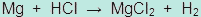

Unit 5: Gases and Atmospheric Chemistry
Activity 3: Gas Everywhere
Assignment
 Assignment 1
Assignment 1
 Lab
Lab
 Complete the following assignment and submit your work to the dropbox.
Complete the following assignment and submit your work to the dropbox.
Before you upload your file, ensure your name appears on the top of every page of your document.
Molar Volume of a Gas
In this assignment, you will analyze data extracted from an experiment performed to determine the molar volume of a gas. Pressure and temperature during the length of the experiment were kept constant.
The following diagram illustrates the set up of the experiment along with the starting data:
Experimental Set-Up and Data:

|
T = 22°C PTotal = 100.5 kPa (barometric pressure for the day) Pwater @ 22°C = 2.6 kPa M Mg = 24.31 g/mol Mass of Mg = 0.05 g |
Description of Reaction:
A 250 mL beaker is filled to approximately 2/3 full and placed at the bottom of the retort stand. The gas measuring tube is filled with 10 mL of concentrated hydrochloric acid and then filled to the brim with water. A strip of magnesium ribbon is attached to a copper wire handle connected to the rubber stopper. The stopper covers the hole of the tube and is carefully turned upside down and attached to the retort stand and immersed into the water in the beaker. The production of bubbles indicates a chemical reaction between the magnesium and the hydrochloric acid. The volume of the gas is measured and recorded.
Following the given data connected to the experiment, complete the necessary information and show the relevant calculation below each step.
Data and Calculations:
|
The reaction is as follows:  |
Collected data: Room temperature: 22°C |
1. Moles of magnesium reacting = ____
2. Pressure of hydrogen gas = ____
3. Moles of hydrogen gas that should be produced = ____
4. Using the experimental values for pressure, volume and temperature, calculate the equivalent volume of hydrogen gas at STP conditions.
PEXP = ____ PSTP = ____
VEXP = ____ TSTP = ____
TEXP = ____ VSTP = ____
5. Molar volume = ____
6.
Mark Breakdown:
Thinking = 10 (stated values)
Communication = 5 (work shown in calculations)
Assignment 2
Complete the following assignment and submit your work to the dropbox.
Before you upload your file, ensure your name appears on the top of every page of your document.
Gas Stoichiometry in an Airbag
|
The deployment of an airbag depends on two chemical reactions that produce nitrogen gas. There is a stored mixture of sodium azide, NaN3, potassium nitrate, KNO3, and silicon dioxide. The starting substance is sodium azide, NaN3. An electric signal is sent to ignite the sodium azide and three reactions follow. The third reaction produces an alkaline silicate. |
The first two reactions produce the necessary nitrogen gas to inflate the air bag.
|
Reaction 1
|
Reaction 2 |
|
|
|
Question:
At STP conditions, what total volume, in litres, of air bag would be deployed if 100 g of sodium azide were used in the mixture? Assume that all of the sodium azide is used up in the reaction. Show all of your work.
Hint: Use your calculated data in Reaction 1 to continue the calculations for Reaction 2.
Mark breakdown:
Inquiry/Thinking marks = 5
Communication marks = 5 (organization, sequence of calculations, presentation of units, formulas, and a proper concluding statement).
 Resources
Resources
This is a disclaimer. External Resources will open in a new window. Not responsible for external content.
Unless otherwise indicated, all images in this Activity are from the public domain or are © clipart.com or Microsoft clipart and are used with permission.